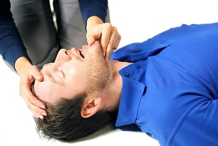
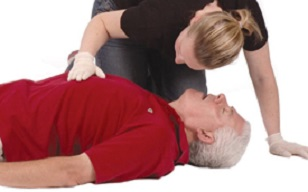
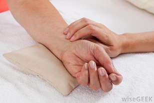
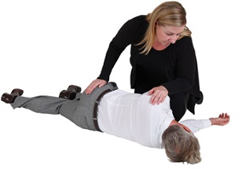
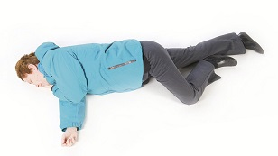

When you encounter an ill or injured person, you will repeat the check, call, care steps until the person´s condition
improves or EMS personnel arrive.
1-CHECK:
CHECK THE SCENE:
Before approaching an ill or injured person, stop and take a good look at the scene:
Is the scene safe?
Are there any hazards?
What happened?
How did it happen?
CHECK THE PERSON:
If the scene is safe, quickly check the person:
Check if the person is reponsive;
Check the ABCs:
Airway
Breathing
Circulation
Checking ABCs:
Airway:

Check the Airway
Make sure the person has an open airway. If the person is speaking, moaning, or crying, the person´s airway is open.
If the person is unresponsive, perform a head-tilt/chin-lift by gently tilting the head back until the chin is pointing up.
Breathing:

Check the Breathing
Check for normal breathing for 5 to 10 seconds. A person is breathing normally if air is moving into and out of the lungs and the chest is rising and falling in a normal, regular pattern. Someone who can speak or cry is breathing.
Circulation:

Check the Circulation
Quickly look at the person from head to toe for signs of life-threatening bleeding.
2-CALL EMS/9-1-1:
If an individual is unresponsive or has a life-threatening condition, you must always activate EMS.
Whenever possible, use a mobile phone or ask a bystander to call EMS/9-1-1.
If you are alone with the person and you do not have a mobile phone, call out loudly for help. If no one comes, get to a phone as quickly as you can and call EMS/9-1-1. As soon as you hang up, return to the person.
If a person becomes unresponsive or his or her vital signs deteriorate, call EMS/9-1-1 immediately.
3-CARE:
Care for any life-threatening conditions first. Give the care that is needed, within the scope of your knowledge and training. Continue to Check, Call and Care, providing continual care with these guidelines:
Monitor the person´s breathing, level os responsiveness, and overall condition.
Help the person rest in a comfortable position.
If necessary, roll the person into the "recovery position"(1).
Keep the person from getting chilled or overheated.
Reassure the person.
Help the person with medication: if it is safe, if the person is responsive and has in some way expressed a need for help finding, preparing, and/or taking the madication.
(1)"Recovery Position": a person who is unresponsive or has an altered level of responsiveness should be rolled into the recovery position. When placing a person in the recovery position, remember:

Recovery Position 1

Recovery Position 2
Support and protect the head while rolling the person;
Try to roll the person as one unit (head, back, and legs at the same time);
Roll the person into a position where the body will stay safely on its side;
Check the ABCs after you complete the roll.
SECONDARY STEPS:
Once you are confident that all life-threatening conditions have been addressed, perform a secondary assessment to check for conditions that may not be as obvious. The secondary assessmente consists of three steps:
1- Ask SAMPLE questions:
Interview the ill or injured person and any bystanders at the scene using the acronym SAMPLE to guide your questions:
S igns and symptoms
A llergies
M edications
P ast medical history
L ast oral intake(food or drink)
E vents leading up to the emergency
2- Check the vital signs:
Level of Responsiveness: is the person alert, sleepy, or confused? Is the person´s responsiveness changing?
Breathing: listen for sounds. Is the breathing fast or slow? Shallow or deep? Painful?
Skin: Is skin dry or wet? An unusual colour or temperature?
3- Perform an Injury Check:
look carefully for injuries that were not identified during the primary assessment. An injury check may involve a focused examination or a hands-on check. If you find a medical-identification product during your check, read it carefully.
Level of Responsiveness: is the person alert, sleepy, or confused? Is the person´s responsiveness changing?
Breathing: listen for sounds. Is the breathing fast or slow? Shallow or deep? Painful?
Skin: Is skin dry or wet? An unusual colour or temperature?
4- Focused Examination:
If the person is responsive and able to answer questions, do a focused examination. If the person´s condition deteriorates, respond immediately.(call 9-1-1, provide care).
Explain that the purpose of the examination is to identify injuries.
Ask the person if anything hurts or feels uncomfortable.
If the person indicates an area of pain or concern, look at the area for signs of injury.
Ask focused questions about how the person feels.
5- Hands-on check:
If a person is breathing but unresponsive or unable to communicate, you may need to do a hands-on check. Begin by cheking the head for injuries, and then work downward, focusing on the chest, abdomen, and legs before checking tha arms.